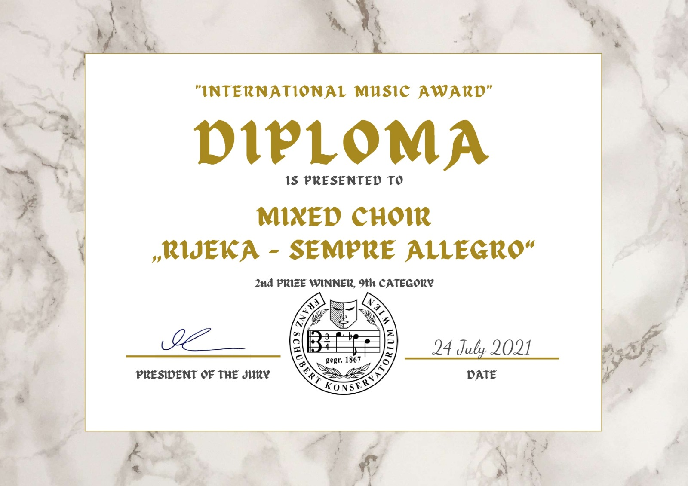
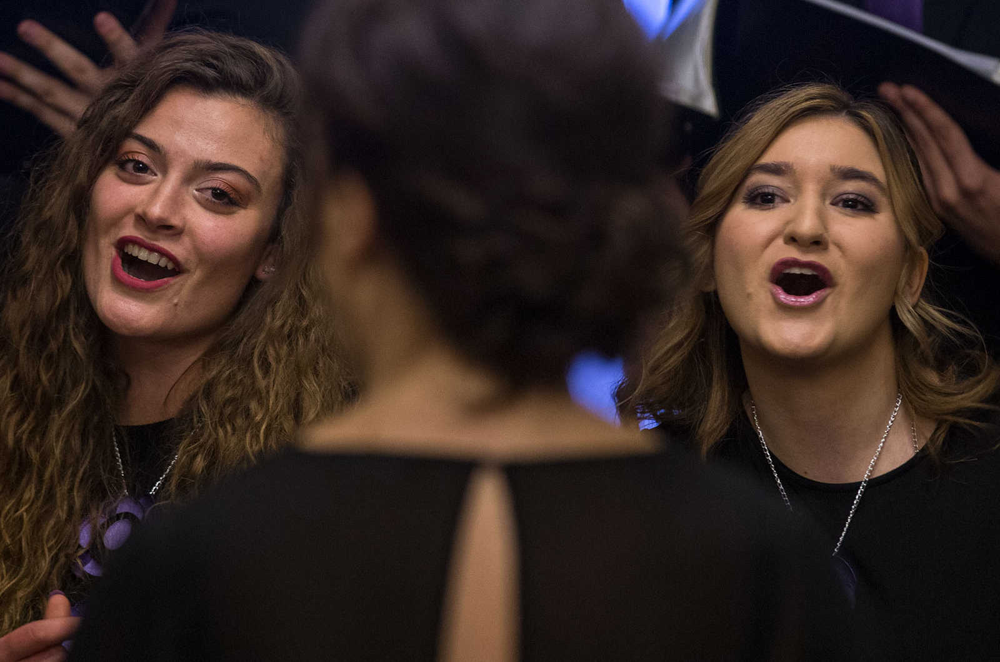
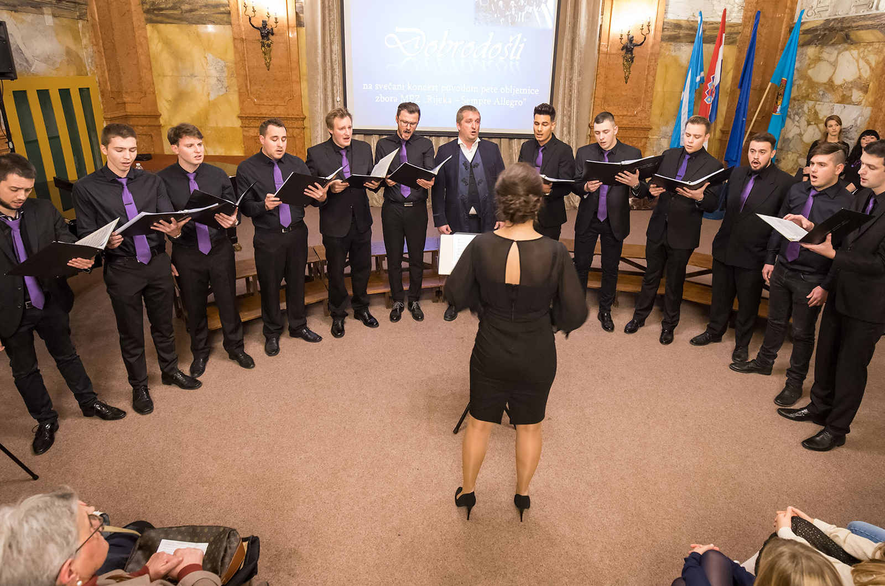
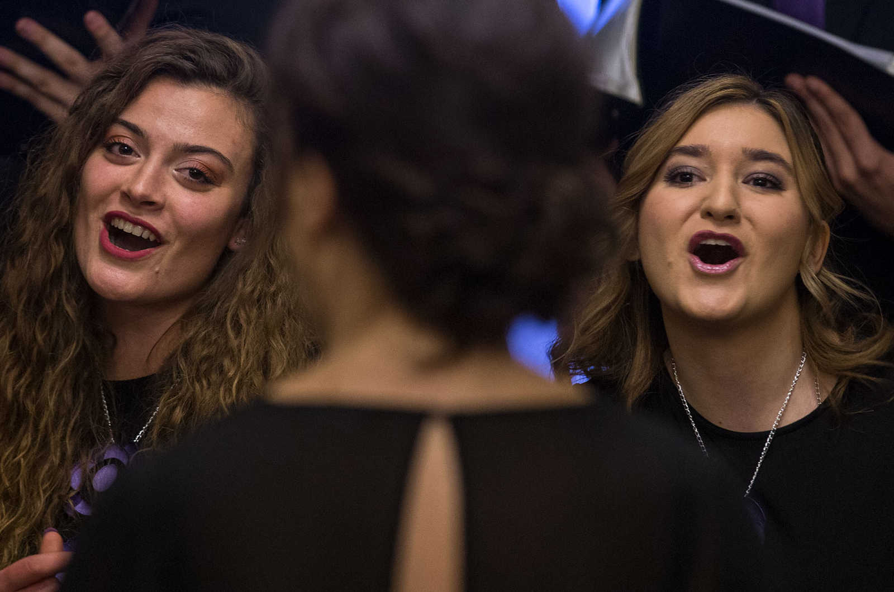
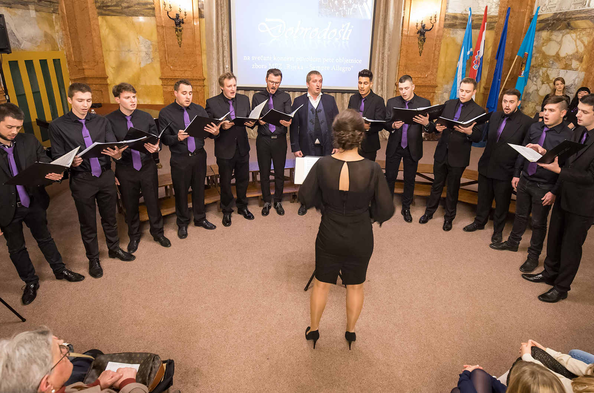
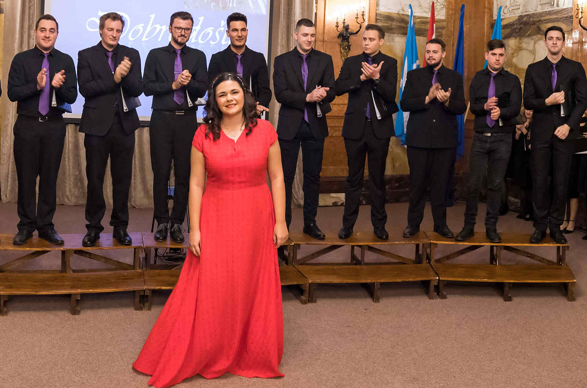
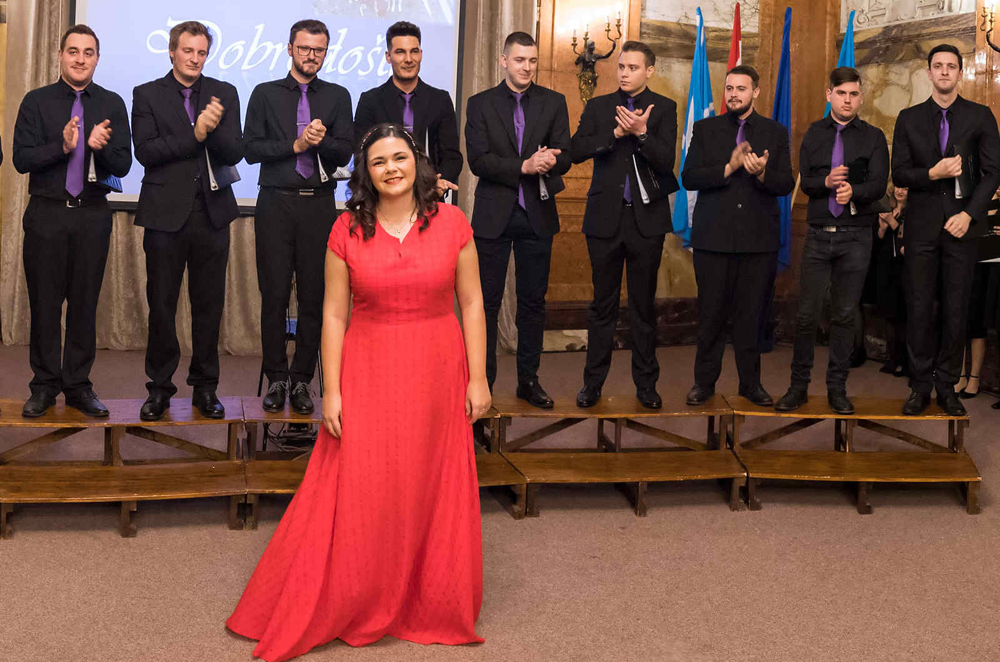

Musica Sacra - Pazin
Listopad 2019.
Listopad 2019.

Musica Sacra - Rovinj
Š irok i raznolik zborski repertoar
Š irok i raznolik zborski repertoar

Musica Sacra - Rovinj
Zajednički nastup sa prijateljima zborom Roženice iz Pazina
Zajednički nastup sa prijateljima zborom Roženice iz Pazina

Guvernerova palača u Rijeci
Mjesto slavlja obljetničkih koncerata
Mjesto slavlja obljetničkih koncerata
Šibenik - tvrđava Sv.Mihovila
Zajednička izvedba Carmine Burane sa Š PD "Kolo" i Simfonijskim puhačkim orkestrom Hrvatske vojske
Zajednička izvedba Carmine Burane sa Š PD "Kolo" i Simfonijskim puhačkim orkestrom Hrvatske vojske
Šibenik - tvrđava Sv.Mihovila
Maestra i dvanaest mušketira
Maestra i dvanaest mušketira
Pijanist Mateo Žmak
Prijatelj i korepetitor zbora
Prijatelj i korepetitor zbora

Putujemo i stvaramo nova prijateljstva
S radošću se sjetimo zajedničkih trenutaka!
S radošću se sjetimo zajedničkih trenutaka!
Čekamo Vas!
Pridružite se našoj Sempre Allegro obitelji
Pridružite se našoj Sempre Allegro obitelji
O NAMA
Obožavamo pjevati, družiti se i putovati
MJEŠ OVITI PJEVAČKI ZBOR “RIJEKA – SEMPRE ALLEGRO“ osnovan je na sv. Ceciliju 22.studenog 2014. godine s namjerom okupljanja zaljubljenika u glazbu i zborsko pjevanje. Dirigentica i osnivačica zbora je Helga Dukarić Dangubić, profesor savjetnik i zborovođa, Maestra mentorica Hrvatske udruge zborovođa.
Zbor je u kratkom vremenu svog postojanja ostvario čak deset međunarodnih nastupa s visokim rezultatima. Svoje prvo međunarodno uspješno predstavljanje Zbor je imao 31. svibnja 2015. na festivalu FAKS u Rovinju.
Ostvario je kvalitetnu suradnju s HGD "Zvijezda Danica" iz Kraljevice, MPZ "Ina" iz Zagreba, GMH "Vardar" iz Skopja, Coro „Giovani Fabrianesi“ iz Fabriana (Italija), zborom Coral Cantemus iz Urugvaja te zborom „Felicita“ iz Njemačke. U rujnu 2019. godine sudjeluje na proslavi 120. obljetnice Š ibenskog pjevačkog društva „Kolo“ izvodeći „Carminu Buranu“. Kroz svoj program njeguje i promiče kulturno stvaralaštvo ovog područja, domaće-riječke, istarsko-primorske i uopće hrvatske glazbene baštine, ali i djela svjetske zborske literature.
Natjecanja i nagrade:
- XXII. Internetional Competition Chorus Inside Croatia (Rovinj, 27.08.2015.) – SREBRO
- International Choral Competition of Folkloristic Music "Adria Cantat" (Šibenik, 28.05.2016.) – SREBRO
- XXIII. International Competition Chorus Inside Croatia (Rovinj, 28.08.2016.) – ZLATO
- International Choral Competition „Aurora Cantat“ (Karlovac, 20.05.2017.) – ZLATO
- XXIV. International Competition Chorus Inside Croatia (Rovinj, 2.09.2017.) – ZLATO
- Međunarodno natjecanje zborova „Istria cantat“ (Pula, 20.01.2018.) – SREBRO
- 2nd International Choir Competition „Istramusica“ (Poreč, 23.09.2018.) – SREBRO
- 2nd International Choral Comptetition „Croatia cantat“ (Rijeka, 24.11.2018.) – ZLATO (kategorija C)
- 2nd International Choral Comptetition „Croatia cantat“ (Rijeka, 24.11.2018.) – ZLATO (kategorija D)
- 2nd International Choral Competition „Istria Cantat“ (Pula 22.02.2020.) - ZLATO (kategorija D)
- 2nd International Choral Competition „Istria Cantat“ (Pula 22.02.2020.) - ZLATO (kategorija C)
- International Music Award – Franz Schubert Konservatorium Wien (Beč, 24.07.2021.) - SREBRO (drugo mjesto)
- Interkultur - Festival Corale Internazionale „Isola del Sole“ (28.09.2022.) – SREBRO
- 4th International Choral Competition „Aurora Cantat“ (Karlovac, 13.05.2023..) – SREBRO (kategorija C)
- 4th International Choral Competition „Aurora Cantat“ (Karlovac, 13.05.2023.) – SREBRO (kategorija D)
Zbor kontinuirano i kvalitetno radi, brzo se razvija te postiže zapažene rezultate. Namjera je, cilj i intencija svih članova nastaviti u istom pozitivnom smjeru uz daljnje razvijanje suradnje sa srodnim organizacijama i zborovima.
Uprava zbora:

Maestra i predsjednica zbora: Helga Dukarić Dangubić

Tajnica: Magda Tomljanović

Blagajnica: Vesna Mohorić
DATUMI NASTUPA
Poslušajte nas na sljedećim lokacijama:
- Veljača 2023.Srijeda, 15.2. u 20:00h svečanost povodom proglašenja najboljih sportaša Grada Rijeke: Hrvatski kulturni dom na Sušaku
- Travanj 2023.Petak, 14.4. u 19:00h koncert u sklopu “We Are Singing†Music Association i Festival We Are Singing Adriatic: Baptistička crkva, Rijeka
- Svibanj 2023.Nejelja, 14.5. u 12:00h 4. međunarodno natjecanje zborova Aurora Cantat, Karlovac
Četvrtak, 18.5. u 19:00h smotra zborova "U skladu s prirodom": grad Bakar, dvorana Matija Mažić
Subota, 20.5. u 18:00h blagdan sv. Jelene, Kastav u suradnji sa Združenim zborom PRHG-a i GAM-a: Trg Lokvina - Lipanj 2023.Utorak, 6.6. u 19:00h Dan grada Kastva: Trg Lokvina
Petak, 23.06. u 22:00h Koncert „Evropska prijestonica kulture 2020. Gradu Baru 2023.“: plato dvorca Sv. Nikole - Listopad 2023.Nedjelja, 1.12. u 12:00h pozdrav Beloj Nedeji: Aleja velikana, otvorenje svečanosti u nazočnosti predsjednika RH
- Studeni 2023.Četvrtak, 29.11. u 19:30h 9. obljetnički koncert: Pomorski i povijesni muzej Hrvatskog primorja Rijeka u suradnji s Vokalnom skupinom "Vetta"
- Prosinac 2023.Subota, 9.12 u 19:30h 8. festival adventskih i Božićnih pjesama u Zagrebu: Grkokatolička konkatedrala Sv. Ćirila i Metoda
- Obavijesti:
20.5.2023. Srdačno pozvani!
Ove subote s početkom u 18 sati MPZ Rijeka - Sempre Allegro na poziv Grada Kastva cjelovečernjim koncertom na Trgu Lokvina sudjelovati će u proslavi blagdana sv. Jelene zaštitnice Grada Kastva.
18.5.2023. Smotra zborova "U skladu s prirodom" ♥️ bilo je lijepo ponovno gostovati 🥰
14.5.2023. Dva srebra i posebna nagrada za dirigenta rizime su današnjeg dana. 4th International Choral Competition Aurora Cantat. I ne manje važno našem Mateo Žmak dodijeljena je nagrada za najbolju korepeticiju. Može li čovjek tražiti više 🍀
16.4.2023. Još jedno zborsko druženje i predivan vikend u glazbi je iza nas. U sklopu “We Are Singing†Music Association i Festival We Are Singing Adriatic imali smo priliku biti aktivni sudionici divnog prijateljskog koncerta u Baptističkoj crkvi sa našim novim prijateljima zborom Chór "Echo" Bielsko-BiaÅ‚a iz Poljske. Posebna zahvala ide publici na burnom i dugotrajnom pljesku. Publika je tražila bis i to ne bilo kakav. Tražila je da ponovimo svih devet pjesama koje smo izveli i na tom daru im neizmjerno hvala 🥰 Dirigenticu Teresa Adamus posebno se dojmila naša izvedba pjesme Moj lipi anđele pa partitura putuje u Poljsku gdje će dobiti novo ruho u izvedbi zbora Echo. Nove suradnje i divna prijateljstva su na pomolu i baš se radujemo!
15.2.2023. Večeras smo imali osobito zadovoljstvo nastupiti na posebnoj svečanosti u Hrvatski kulturni dom na Sušaku povodom proglašenja najboljih sportaša Grada Rijeke. Bravo svima! Zajednica sportskih udruga grada Rijeke “Riječki sportski savez†hvala na pozivu!


Kontratenor: Marko Antolković

Korepetitor i prijatelj Zbora: Mateo Žmak


Š ibenik - Carmina Burana 2019.
27.09.2019.
Koncert uoči Dana grada Š ibenika

Gostovanje u Makedoniji
14.04.2016.
Ugostili su nas GMH “Vardar†iz Skopja

Druženja i nastupi
2014. - danas
Zborska galerija- druženja i nastupi na jednom mjestu

Koncert povodom 5. obljetnice Zbora
29.11.2019.
Svečani rođendanski koncert održan u Mramornoj dvorani
Koncert Rijeka 2020. "Zvona našeg grada"
01.02.2020.
Koncert "Zvona našeg grada" bio je sastavni dio otvorenja Rijeke - Europske prijestolnice kulture

Koncert povodom Dana sv. Vida 2020.
14.06.2020.
I uspros koroni vaši Allegrići pripremili su koncert kojim će najdražem gradu Grad Rijeka čestitati Dan grada, u sklopu obilježavanja Dana svetog Vida.
Š ibenik - Carmina Burana 2019.
Š ibensko pjevačko društvo "Kolo"
Na ljetnoj pozornici tvrđave sv. Mihovila uoči Dana grada Š ibenika, kantatu Carmina Burana izveo je Simfonijski puhački orkestar HV-a, Š PD Kolo i njihovi gosti iz Rijeke Mješoviti pjevački zbor Sempre Allegro.
Dirigent je bio Miroslav Vukovojac - Dugan, a solisti sopranistica Lidija Horvat - Dunjko, kontratenor Marko Antolković te bariton Florijan Tavić. Ovim koncertom šibenski Kolaši obilježavaju i 120 godina djelovanja.
Unatoč prohladnoj večeri, gledalište na ljetnoj pozornici tvrđave sv. Mihovila bilo je ispunjeno, a nastup Kolaša i njihovih gostiju iz Rijeke te Simfonijskog puhačkog orkestra HV-a publika je nagradila velikim aplauzom.
Izvor: Slobodna Dalmacija


Skopje - Veles: Mostovi prijateljstva 2016.
GMH "Vardar"
MPZ "Rijeka - Sempre Allegro" i HGD "Zvijezda Danica" iz Kraljevice i njihova umjetnička voditeljica prof. Helga Dukarić Dangubić vratili su se s četverodnevnog međunarodnog gostovanja u Makedoniji
gdje su zajedno sa svojim prijateljima i domaćinima GMH "Vardar" u Skopju održali dva koncerta pod nazivom
"Mostovi prijateljstva" - u Velesu u Gradskom pozorištu
te u prostoru Muzeja na makedonskata borba za državnost i samostojnost u Skoplju.
Ova suradnja nastala je kao plod prijateljstva između dirigenitca zborova Helge Dukarić Dangubić i Jasmine Gjorgjeske koje su osmislile
gostovanje pa je u prvoj fazi realizacije makedonski zbor GHM "Vardar" u srpnju 2015. godine gostovao u Kraljevici i Rijeci, dva su koncerta izvedena u dvorcu Frankopan i u HKD-u na Sušaku.
Zborovi su se predstavili programom kojim su prezentirali hrvatsku zborsku kulturnu baštinu, ali i popularne obrade. Koncerti su bili izuzetno dobro posjećeni, a hrvatski zborovi ispraćeni su sa ovacijama.
Intencija je da ova međunarodna razmjena i širenje hrvatske i makedonske zborske kulturne baštine postane tradicionalna, pa se već sljedeće godine planira ponovni susret ova tri zbora i koncerti
u Rijeci i Kraljevici, kaže Helga Dukarić Dangubić.
Izvor: Novi List


Druženja i nastupi
Pridružite se i Vi našoj Sempre Allegro obitelji


Obljetnički koncert 29.11.2019.
Pet godina je prošlo od osnutka našeg zbora, a 29.11.2019. smo tim povodom održali koncert u Mramornoj dvorani Guvernerove palače
koja je bila premala za sve one koji su nas došli podržati. Osim mjesta više, publika je nakon drugog izvedenog bisa tražila još
uz dugotrajni pljesak.
Hvala publici koja nas prati i podržava, našem korepetitoru Mateu Žmaku, posebnoj gošći, sopranistici
Katarini Toplek te solistu Valteru Simčiću. Hvala i pokrovitelju: Primorsko - goranska županija. Najveća zahvala ide našoj maestri
Helgi Dukarić Dangubić koja nas već pet godina uspješno vodi.

 



 


Koncert "Zvona našeg grada" 01.02.2020.
Predstavili smo se publici atraktivnim programom- pop obradama poznatih
hrvatskih i svjetskih hitova te klapskim brojevima u zborskom ruhu.
Gost koncerta
je kontratenor Marko Antolković s kojim je Zbor surađivao na izvedbi Carmine Burane
poznat po osvojenom zlatnom gumbu i ulasku u finale Super talenta. Pijanista,
korepetitor i prijatelj Zbora Mateo Žmak obogatio je program koncerta popularnim crossoverom.
#rijeka2020 #portofdiversity #lukarazlicitosti #epk2020


Koncert povodom Dana sv. Vida 2020.
Vaši se veseli Allegrići vraćaju u akciju nakon dva mjeseca godišnjeg odmora te već pripremaju novi nastup.
I uspros koroni vaši Allegrići pripremili su koncert kojim će najdražem gradu Grad Rijeka čestitati Dan grada, u sklopu obilježavanja Dana svetog Vida. Koncert se održao na glavnoj pozornici na Korzu u nedjelju 14.06. s početkom u 20.30.
#rijeka2020 #portofdiversity #lukarazlicitosti #svVid


MAESTRA
“Music gives a soul to the universe, wings to the mind, flight to the imagination and life to everything.†Plato
Helga Dukarić Dangubić, profesor savjetnik i zborovođa. Diplomirala glazbenu kulturu na Pedagoškom fakultetu u Puli. Umjetnička je voditeljica i dirigentica mješovitom pjevačkom zboru „Rijeka – Sempre Allegro“ i dječjem zboru “Kantridska jedra“. Hrvatska udruga zborovođa joj je 1. travnja 2016.g. dodjelila priznanje u obliku strukovnog naziva Maestra mentorica Hrvatske udruge zborovođa za postignute trajne rezultate visoke umjetničke razine. Iza sebe ima impresivan uspjeh te je sudjelovala na brojnim državnim i međunarodnim smotrama i natjecanjima na kojima osvaja srebrne i zlatne plakete. Među nagradama se ističu dvije srebrne i zlatna plaketa s državnog natjecanja Glazbene svečanosti hrvatske mladeži u Varaždinu s dječjim zborom „Hreljinski svićurići“ 2008.,2009., i 2010.g. S dječjom klapom „Krijesnice“ na državnom natjecanju u Zadru osvaja dva zlata i broncu 2009., 2010., i 2011.g. Na državnom natjecanju „Europa u školi“ osvaja tri nagrade – dvije zlatne te jednu brončanu (2007., 2008., 2009.).
Umjetnički je voditelj i dirigent zbora „Vokalni studio Rijeka“ od 2010. do 2014. godine. Nagrade i priznanja:
- Međunarodno natjecanje zborova "22. Concorso Internazionale Di Canto Corale" - SREBRO (Verona, 2011. godina)
- Međunarodno natjecanje zborova u folklornom pjevanju "Adria Cantat" - SREBRO (Šibenik, 2014. godina)
- "XII. International Competition Chorus Inside Croatia" - ZLATO (Rovinj, 2014. godina)
- Svjetsko natjecanje zborova "Canta al Mar" - ZLATO (Callela, Š panjolska, 2014. godina)
U periodu od 2012. do 2018. također vodi i HGD „Zvijezda Danica“. Osim brojnih nastupa i gostovanja u zemlji i inozemstvu, ističu se sljedeće nagrade:
- Svjetsko natjecanje zborova "Canta al Mar" - SREBRO (Callela, Š panjolska, 2014. godina)
- Međunarodno natjecanje zborova „Adria Cantat“ – SREBRO (Š ibenik, 2016. godina)
- „XXIII. International Competition Chorus Inside Croatia“ – SREBRO (Rovinj, 2016. godina)
- International Choral Competition „Aurora Cantat“ – SREBRO (Karlovac, 2017. godina)
22. studenog 2014. godine osniva zbor MPZ „Rijeka – Sempre Allegro“ koji u kratkom vremenu ostvaruje zapažene rezultate. U pet godina postojanja, osvaja četiri srebrne nagrade te sedam zlatnih nagrada:
- XXII. Internetional Competition Chorus Inside Croatia (Rovinj, 27.08.2015.) – SREBRO
- International Choral Competition of Folkloristic Music "Adria Cantat" (Šibenik, 28.05.2016.) – SREBRO
- XXIII. International Competition Chorus Inside Croatia (Rovinj, 28.08.2016.) – ZLATO
- International Choral Competition „Aurora Cantat“ (Karlovac, 20.05.2017.) – ZLATO
- XXIV. International Competition Chorus Inside Croatia (Rovinj, 2.09.2017.) – ZLATO
- 1stInternational Choral Competition „Istria Cantat“ (Pula, 20.01.2018.) – SREBRO
- 2nd International Choir Competition „Istramusica“ (Poreč, 23.09.2018.) – SREBRO
- 2nd International Choral Comptetition „Croatia Cantat“ (Rijeka, 24.11.2018.) – ZLATO (kategorija C)
- 2nd International Choral Comptetition „Croatia Cantat“ (Rijeka, 24.11.2018.) – ZLATO (kategorija D)
- 2nd International Choral Competition „Istria Cantat“ (Pula 22.02.2020.) - ZLATO (kategorija D)
- 2nd International Choral Competition „Istria Cantat“ (Pula 22.02.2020.) - ZLATO (kategorija C)
Na natjecanju „Croatia cantat“ održanom u studenom 2018. te na natjecanju „Istria Cantat“ održanom u veljači 2020. osvaja i posebnu nagradu za dirigenta.
Izdala je dva nosača zvuka te je član prosudbenih komisija na natjecanjima zborova i klapa.
ČLANOVI
Allegrice:
Soprani:
Nikolina Akmadža
Arijana Babić
Suzana Baljak
Lara Čvorak
Vlasta Kabalin
Kristina Komar Čavlović
Lina Mohorić
Tarin Kaja Rupčić
Marija Sučić
Lea Šešelja
Snježana Štiglić
Alti:
Majda Anić
Jadranka Jurić
Vesna Mohorić
Jelena Picco
Dora Šimunović
Karmen Š porčić
Magda Tomljanović
Štefica Topić
Allegrići:
Tenori:
David Babić
Mario Jurčić
Vanja Makaj
Srećko Mihelić
Luka Požgaj
Marino Štiglić
Basi:
Damjan Banić
Marko Maričević
Damjan Mihelić
Karlo Ninić
Neven Panić
Matija Pejčinović
Anteo Stašić
KONTAKT
Želite li pjevati s nama? Glazbeno obrazovanje nije uvjet. Pošaljite poruku, čekamo Vas!
Adresa prostora:
Š etalište Andrije Kačića Miošića 8, 51000 Rijeka
(Probe se održavaju ponedjeljkom i srijedom od 20-22h)
Mobitel:+385 91 5712 453
Email: h.dukaric.dangubic@gmail.com
rijeka.sempre.allegro@gmail.com